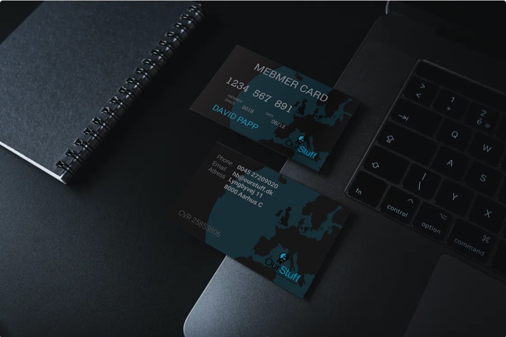
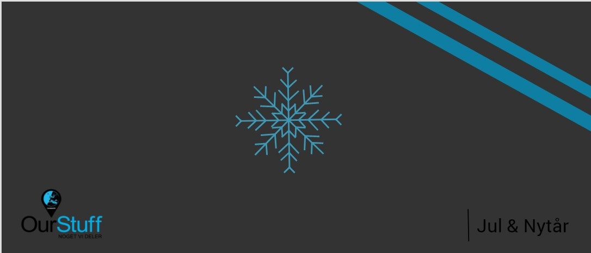
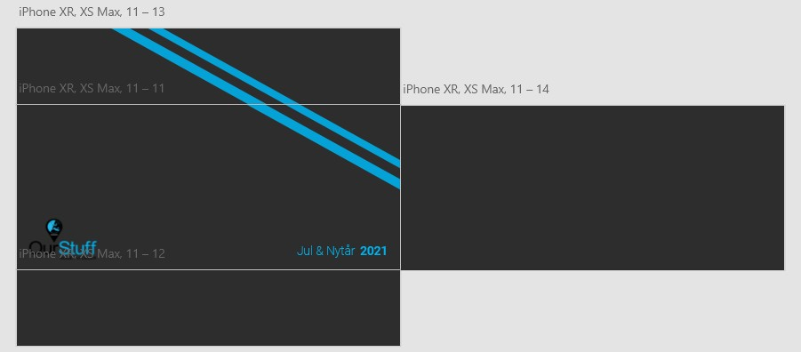
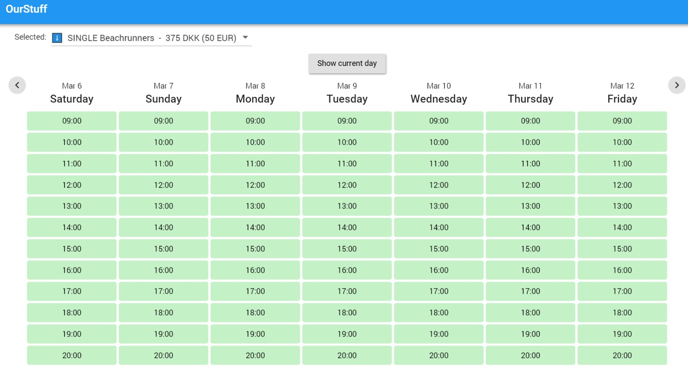
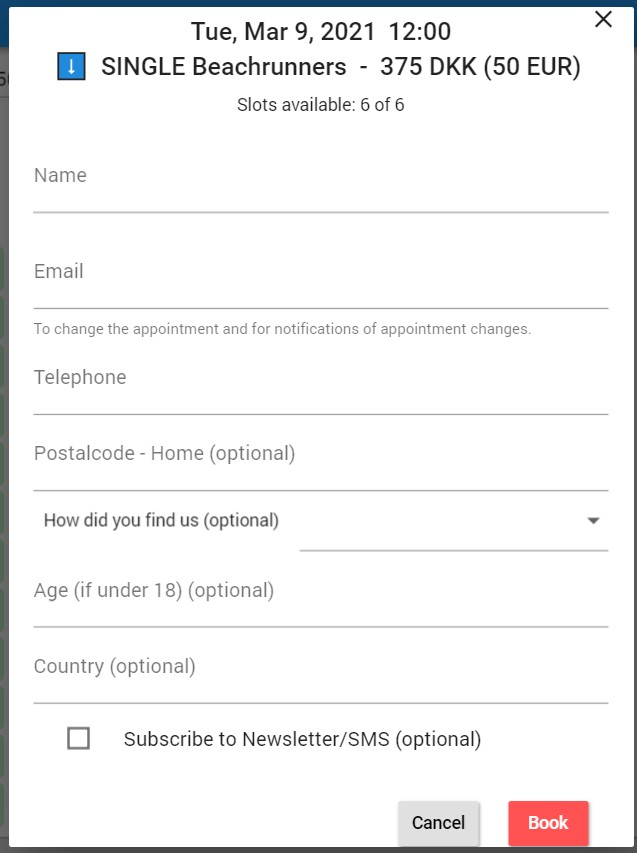
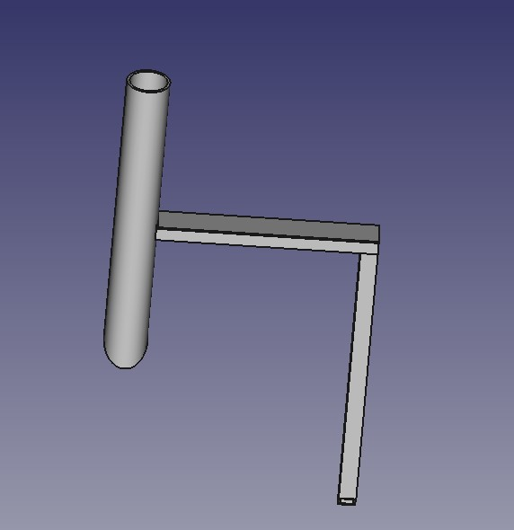

week 2
In my first day I got comprehensive description about the company I work for. Henning, the leader showed me what are the startups main goals for the next few months and what are my part will be to reach these goals during the internship.
My task will be built up a social media profile on the most popular and -of course relevant - platforms. The company’s marketing part was effective, so I have to improve it. Beside that I will also have short rapid assignments which are not requires a long-term intervention as the social media profile operation, like video editing and flyer designing.

I embarked on my duties with a member card designing. It was important because in the business plan it has an essential part, so this must be done at the beginning. This is a normal member card for the customers which will provide discount in in certain services. We gathered the main character points with Henning about what data should be showed in the card and what is the goal of the card so I could based the design on these. All in all, I spent 9 hours to make it. I discussed with Henning about the layout and the structure in every design part if he is satisfied with the results.

Here is a link to Adobe XD with my work of the clubcard (the final version is marked with star).
I got an assignment to make a video for a presentation, which introduce the company entertainment’s strength and involves three principle: it is easy to learn, it is safety, and its enjoyment is not age-related. We agreed that the video will be 45-60 seconds long because it is a part of a 20 minutes long presentation. For this I got video and photo materials what others recorded in the last summer, so I could used these. However, I didn’t learn anything is the school, but fortunately I have some experience in video editing, so it was not that big challenge. I made the video in 2-3 hours and every necessary point was completed. I included the three mentioned principle and cut 6 videos with photos and text. I showed it some competent friends as a “usability test” and asked for feedback. The audience liked it and said some small changes what I fixed. Henning liked it as well and so he inserted it to his presentation.
I started the social media profile building on Wednesday I had some experience in this area, because I have a Youtube channel. But in the first 4-5 hours I only read articles and tips about how to built up an effective social media profile which is permanent and brings us costumers.
First I started with the Instagram. After I study templates for this I made a strategy plan for the next months highlighted the season months. It is about how do we have to upload content, what tone of voice will we use. I put an emphasis on our target group and the Instagram users’ golden circle. I started to create the Instagram profile for the company. Henning already created one few months ago, but it seemed it requires some changes and requires compliments.
week 3
First we discussed with Henning what services we offer exactly for our clients: the number of beachrunners available, how many people can use them at the same time (single or double beachrunner). We have 6 single and 2 double beachrunners so far, that can be rented out for one hour minimum. We made packages from combinations of beachrunners like a family package that contains two single and one double beachrunners, and ofcourse we assigned the prices for the packages.
We will need a booking system what can handle our services with these specifications. I decided to find an online booking system what we can use as an API because of the following reasons: firstly saving time, it would take days or weeks to code this with my experience, secondly there are perfectly working booking systems available on the internet what we can use, and finally when I finish my internship I will have to teach somebody to handle the system and so it should be really user-friendly.
The disadvantage of these kind of systems is they provide solutions for general problems and our problem may be too specific and unique to find a perfect solution.
To find the best one for us I followed these steps: I looked up on the internet what systems others recommend the most for our problem with services. I chose what fits the most in my opinion and I created a profile and built up a demo channel with our beachrunners and services but only using sample data to save time. Actually I took 2-3 days to find the right system because all booking systems had some issues which ruins the user experience we want to reach. I tried 5-6 systems until I found one that looked right.
week 4
In this week I started working on a gift box. It is a gift box for christmas, that the companies
can give to their employees. It consist of a small box chocolate and a catalog with different kind
of services / products. the employees can choose which service / product they want.
Our company were selling this box last year but Henning wanted a new design. I had to create the design
and structure of the box cover, the catalog cover and back; and the catalog inside what
includes ~40 pages.

I started with the catalog front cover. I used my learnt knowladge and a special guide what was made for exactly this kind if service-gift box. In the first round I was more successful with the design structure than with the colors. I could place the basic elements like logo and a chistmas tree, but i was not satisfied with the colors. So I moved on to a new part so I will be able to get back with fresh mind.

I continued with the back cover what I wanted to match with the fron so, I used elements what makes this two connected.
Then I made the big box cover what was a mistake but I didn’t know it that time. My company have already printed 500 of the big boxes, so i should not redesign it because we have to use the already printed ones because of the budget. But I really could match it with the front catalog cover so it looked nice until a talked with Henning and got to know that I have to delete them. I moved to the actual "content pages" of the catalog these was maybe the easíest because I inspirated by some samples before so I used them with small changes.
Next day I had a meeting with Henning, I presented what have I done and we agreed in some changes. I redesign the front cover, I replaced the christmas tree to a snow flake. The three with the colors couldn't fit to the overall layout. But the snowflake was cool - because of the blue. Some part were diverge what Henning imagined so I had to spend hours to change them, but finally at the end of the day it looked okay and everything was ready to create the catalog (I just needed to wait for the images and text from my colleague).
Here is a link to Adobe XD with my work of te gift box.
week 5
In this week I mostly worked on the booking system and the website. I also had different tasks, but on the mentioned two assigments a spent 3-5 hours in every day.
We set up a booking system called Start booking and it seemed right for our requirements
on the first days, but after we did many many usability test we found a huge problem that would
cause problems in the user experience. It is complicated to explain, so let me just say: it would
half the number booked appointments for the beachrunners. So we had to find a new booking system
(like for the 10th time). So we tried the Calengoo. As always, first I set up a demo account
to see the available features. After deep feature testing and usability test everything seemed fine
and perfect, so I set up a full account with the real emailaddress.

User form before agreement
I also continued with the catalog. I tried to found the right color combination for the font
cover. However it seemed fine after 3-4 hours, I still spent the same amount of time in the afternoon
from my freetime beacause it flustrated me so much. But for the next they all element came together.
The front and back cover, the general pages the box, and frame.
week 6
In this week I concentrated mainly to two area: The booking system's owner side
and a certificate for members who took a training course about beachrunners.
For the booking system (what we are really satisfied with) I have a developer acces
from the owner - which means I have some features what most of the users don't have yet.
One of these features is that I can "download" the user data of the bookings. We discussed with Henning
that he would like analyzes the data in the future, so it would be good to have something platform wher he can see them.
The downloaded data is a Json file which is not the best visualized format for Henning, but the best one for work with (for me).
So we set up a layout in Adobe xd what easily understandable for him. It contains all of the form what
the users filled out, name email, if they want to subscribe for newsletter, etc.
Then I started to create a page where the date are displayed and can be filtered and arranged.
I really like this task beacause it is easy but useful (I use it since my 3rd semester's first project so I have experience with it :) ).
I also placed search input bar for make more easily finding the needed data, so it was complete. Henning was amazed by the Javascript codes :).
The certificate felt like a break project. After the programming it was good to work the deign area.
Actually Henning already had a certificate what he made, but he felt it needs a redesigning so it will match
to the brand of the company. He wanted the original information on the new certificate, but I had some
suggestions for change.
However the time I spent with the designing was one and a half day, I felt it faster. I enjoyed
working on this one, everything went easily and Henning called the result "perfect".
week 7
The 7th week was a preaparation day for the beachrunner's season. We have 2 months until it starts and
it would be wise to prepare with materials for socialmedia content (if we will have season we won't have time
for it). We shared the work with Mette, first we discussed what content we want to upload later, then I
made the videos, photos and finally she wrote text.
week 8
I continued working on the last week's social media contect creation. I spent 2 days with creating videos and photos for Instagram. I started working on a new advertising
platform: we have an aquarium with 15cm-long beachrunner modells and we want to place information about
the prices, location etc. to the wall of the aquarium - so I was working on this text with Mette.
week 9
In this week I spent two days with helping for Henning's son. He makes his own chocolate and sell it on his website
since 2019. I helped him with the webshop (on Wix), I just set up small details and taught him how can
he do it next by himself. I also took photos of his products and after a small photoshop I uploaded them to the website.
I also made a 3d plan about a specific tool. Henning needed something what he can use for holding the beachrunner's sail.
It is a tool made from iron and it has te be able to hold a sail. It is complicated to explain what it is exactly, so see the
image below :)
Flag holder